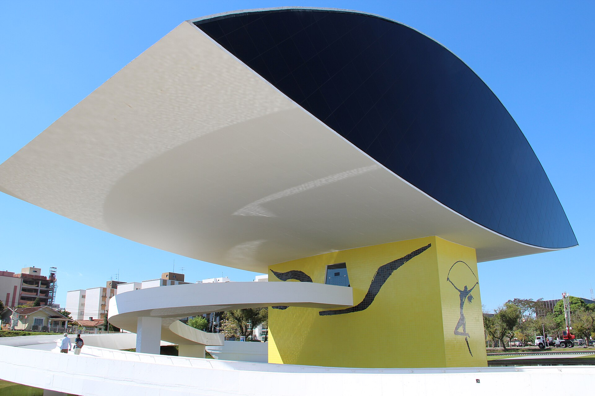
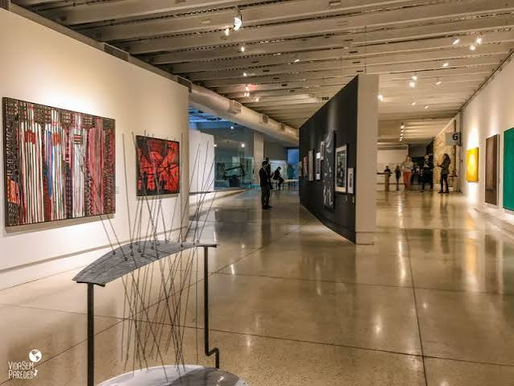

1. História do Museu
O Museu do Olho, oficialmente chamado Museu Oscar Niemeyer (MON), é um dos principais museus de arte da América Latina e um dos maiores símbolos de Curitiba, no Paraná. Conhecido por sua arquitetura moderna e pelo edifício em formato de olho, o museu reúne exposições de arte, arquitetura, design e fotografia, atraindo visitantes do Brasil e do exterior.

2. Contexto histórico
O Museu Oscar Niemeyer é um importante símbolo da identidade cultural do Paraná. Sua arquitetura inovadora, reconhecida nacional e internacionalmente, representa a criatividade e a valorização da arte no estado. Além de preservar e divulgar obras de artistas paranaenses, brasileiros e estrangeiros, o museu promove exposições, atividades educativas e eventos culturais que aproximam a população da arte e do conhecimento. Por ser um dos principais cartões-postais de Curitiba, o Museu do Olho fortalece o orgulho dos paranaenses, incentiva o turismo e contribui para a preservação e divulgação do patrimônio cultural do estado.

3. Importância cultural
O Museu Oscar Niemeyer é fundamental para a identidade cultural paranaense porque representa a história, a arte e a inovação do estado. Além de preservar um importante acervo artístico, o museu valoriza a produção cultural do Paraná ao oferecer espaço para exposições de artistas locais e nacionais. Sua arquitetura, criada por Oscar Niemeyer, tornou-se um símbolo de Curitiba e um dos principais cartões-postais do estado. Dessa forma, o museu fortalece o sentimento de pertencimento dos paranaenses, incentiva a educação por meio da arte, promove o turismo cultural e contribui para que a cultura do Paraná seja reconhecida no Brasil e no mundo.